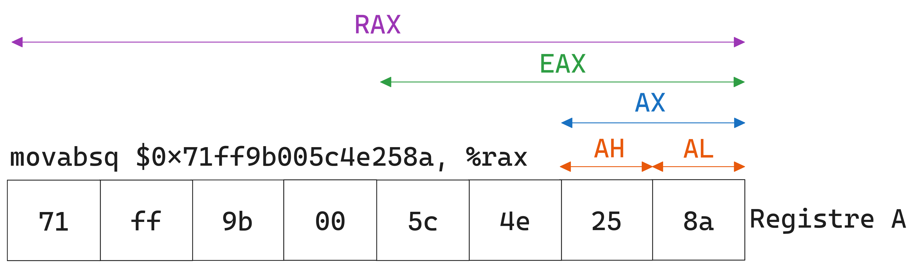

Charger le registre
%rax
avec une valeur immédiate de 64-bits.
Charger que les 32-bits de poids faibles de
%rax
dans
%rbx
qui remplira le reste avec des
zéros
.
Modifier que le deuxième octet de
%rax
.
Modifier que le premier octet de
%rax
.
Modifier que les deux premiers octets (16-bits) de
%rax
.
Modifier les quatre premiers octets (32-bits) de
%rax
tout en rajoutant des
zéros
jusqu'au 64ème bit.
Modifier tous les huit octets (64-bits) de
%rax
en rajoutant des zéros s'il le faut.
Charger les deux premiers octets de
%rax
dans
%rbx
.